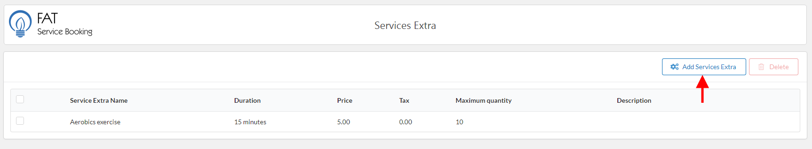
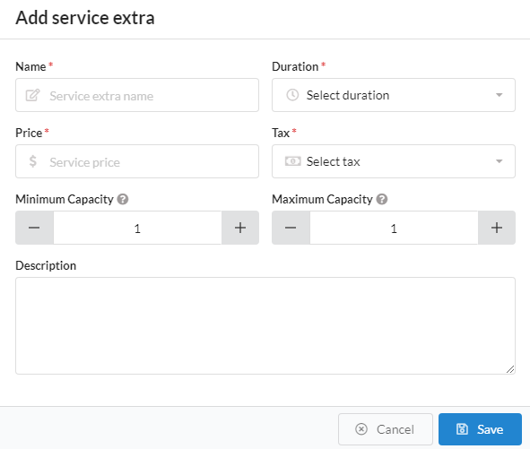
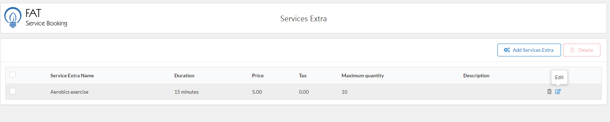

Extras allow you possibility to add additional services or products customers can buy when they are scheduling the appointment.
To create service extra, please do follow:
Log into your WordPress admin panel.
Navigate to FAT Services Booking » Services Extra.
Click 'Add Service Extra' in right screen.
Fill service extra info.
Click 'Save' button to save service extra.

Create service extra.

Popup create service extra.
Name: This is name of service extra and it is required
Duration: This is duration of service extra, it defined how long will the service take.
Price: You need to enter the price of service extra.
Tax: It have three tax level: 0%, 5%, 10%. If your service extra don't have tax, please select 0%.
Minimum capacity: Minimum number of person per one booking of this service.
Maximum capacity: Maximum number of person per one booking of this service.
Description: You can add a description for this service at here
Edit or delete service extra
After create service extra, if you want edit or delete service extra, please hover mouse on service extra item.
The 'edit' or 'delete' icon will be appearance in top right corner of item. Please click 'edit' icon if you want edit, or 'delete' icon if want delete

Edit service extra.
To delete service extra, it have two options to delete:
The first option: Hover on service extra item, the 'delete' icon will be appearance at right. Click 'delete' icon to delete
The second option: With this option, you can delete multiple service extra. Check at item what you need delete, click 'Delete' button on top right corner